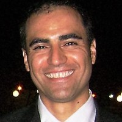

Sales, Marketing & Business Development Manager
Areas of expertise
Strategic Planning
Trade marketing
Brand Development
Market Segmentation
Bussiness Administration
Training & Development
Team Leadership
Profesional Experience
TINY HOUSE COFFEE ROASTERS – Austin, TX
Account Manager (May 2018 – Present)
ALWAYS GLOSSY – Austin, TX
Associate Operations Manager (Sep 2016 – Dec 2017)
Oversee daily operations for this start-up company, providing onsite eco car wash services to corporate offices. Streamline customer service operations for more than 450 customers, while liaising between customers and the automobile detail department. Direct all operations and service activities on logistics, and appointment changes.
Selected Contributions:
• Created a more responsive and engaged team through resource management, and comprehensive instruction on daily operational procedures.
• Cultivated strong, and long-lasting client relationships through strategic complaint resolutions, continually exceeding service standards.
PERNOD RICARD ESPANA – Barcelona, Spain
Off Premise Account Manager (Jan 2011 - Sep 2015)
Directed local and regional for key food accounts, supermarkets, and cash & carry, charged with a zone with income of 120MM€ per year. Managed over 200 accounts with a combined annual spend of 10MM€, with consistent increased sales achievements, per client, by 10% in the first year.
Selected Contributions:
• Triggered 20% growth in clients and regional accounts, increasing the portfolio by 1.1MM€ in annual company revenue each year.
• Integral player performing as Regional Account Manager, closing contract agreements and multiple projects for regional accounts.
• Cooperated with the RD&I department in creating strategies, presenting projects that developed group and client brands.
Projects
• Landing page, Css Blog, Css Resume, Blog Posts
Education and Credentials
Austin Coding Academy: Sudent of Web Development